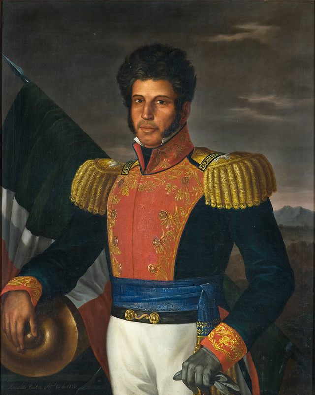
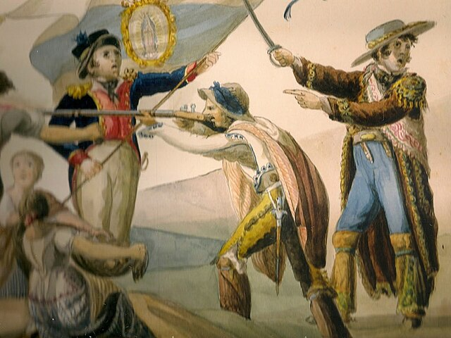
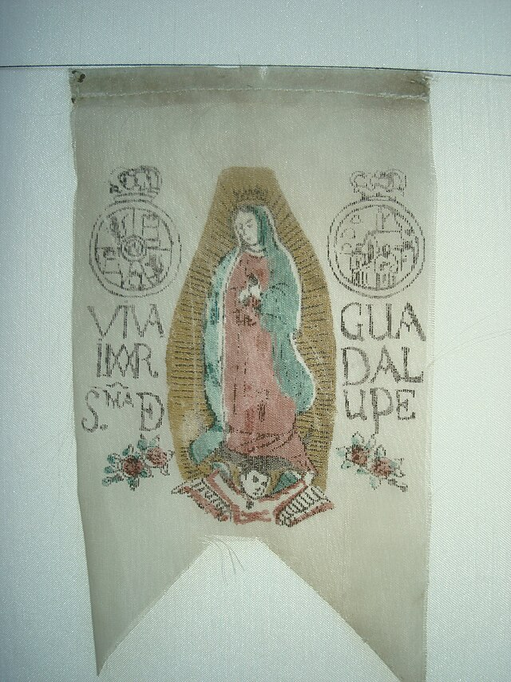

⟵
Participación de la Sociedad
Mujeres en la independencia
Participación afrodecendiente e indígena

El papel del clero
Apoyo popular y resistencia social

La educación y la propaganda insurgente
